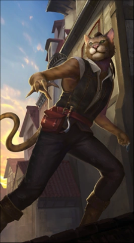

Khajiit sind ein katzenartiges Tiervolk, das in Elsweyr lebt.
Sie sind als Gesetzesbrecher verrufen und werden von den anderen Völkern oft argwöhnisch betrachtet. Am
verbreitetsten sind dabei die Vorurteile, jeder Khajiit würde stehlen und Drogenabhängig sein, vor allem
von Skooma und Mondzucker.

Leitung
Der inoffizielle Anführer Elsweyrs ist die Mähne, ein besonderer Khajiit, von dem es immer nur einen
geben soll. Er wird geboren, wenn sich ein dritter Mond vor Masser und Secunda schiebt. Dieser Khajiit
wird von den meisten Khajiit als spiritueller und politischer Anführer anerkannt und sogar angebetet.
Sie brachten oft Frieden für das Land, jedoch ist nicht viel über sie bekannt.
Eine andere regierende Instanz sind die Klanmütter, die die Landwirtschaft verwalten und großen
politischen Einfluss haben.
Leben
Die Khajiit, die im Dschungel bewachsenen Süden leben, betreiben Landwirtschaft und sind eher sesshaft,
auch gibt es dort Adel und mehr kaiserliche Einflüsse als im Norden. Diese führen ein nomadisches Leben
und werden von Stammesführern geleitet, einige sind auch Plünderer.
Diebstahl
Einer der Gründe für die Distanz, die andere Völker zu den Khajiit wahren, ist der Stereotyp, sie seien
alle Diebe. Für Khajiit ist dies eine unbekannte Auffassung, denn in ihren Augen gehört etwas niemandem,
wenn nicht deutlich gesagt oder gekennzeichnet wurde, dass es jemandem gehört. Sollten sie also etwas in
ihren Augen Besitzerloses sehen, nehmen sie es sich, wenn es ihnen gefällt, ohne Gewissensbisse oder
böse Hintergedanken.
Auch in ihrer Sprache manifestiert sich dies, mit dem Wort Dar, was an manche Namen angehängt wird.
Dieses Wort bedeutet sowohl Dieb als auch clever und geschickt.
Speisen und Drogen
Die Khajiit lieben Süßspeisen, welche jedoch oft für andere Völker nicht verspeisbar sind, da sie ihnen
Drogen wie Mondzucker beimischen. Als einzige Rasse Tamriels können sie diverse Drogen in hohen Mengen
konsumieren, ohne Schäden davonzutragen, was mit ihrer körperlichen Beschaffenheit zusammenhängt. Dieser
Drogenkonsum ist für die Khajiit etwas ganz Natürliches, der Handel, Besitz und Konsum mit und von
illegalen Stoffen wird vom Kaiserreich dennoch bestraft, wobei es in Elsweyr etwas lockerer gesehen
wird.
Kampf
Khajiit verfügen über Krallen an Händen und Füßen, welche sie im Kampf ähnlich gut wie die Argonier
einzusetzen wissen. Aufgrund ihres Körperbaus und ihrer Kultur bevorzugen sie leichte Waffen und
Rüstungen und lehnen schwere Rüstung ab. Kombiniert mit dem verbreiteten Können zum Schleichen agieren
viele Khajiit gerne im Schatten und töten ihre Opfer aus dem Hinterhalt. Doch sie sind auch magisch
begabt, hervorstechen tun in diesem Fach die Dagi und Dagi-Raht.
Seit jeher sind die Katzenmenschen gefürchtete Guerilla-Krieger, die im Dschungel so gut zurechtkommen
wie in der Wüste, auch die Senche sind agile und gefährliche Kämpfer.
Im Jahre 2Ä 311 offenbarte die erste Mähne Rid-Thar-ri'Datta im Tempel von Knurr'Kha den khajiitischen
Gott Riddle'Thar. Dies gilt als das bedeutendste Ereignis der modernen khajiitischen Theologie.